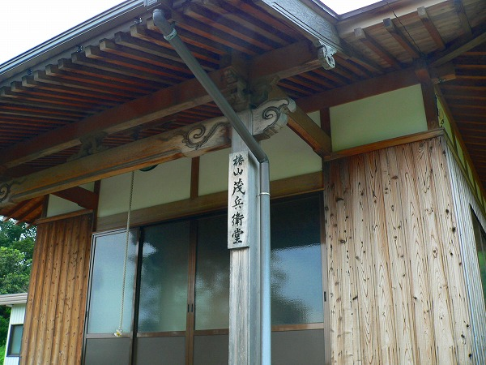
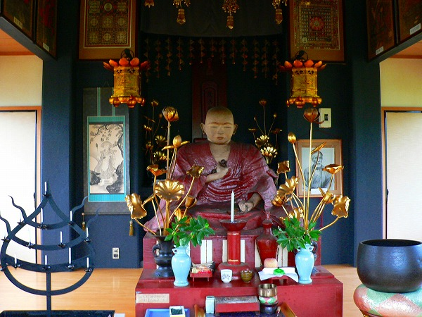
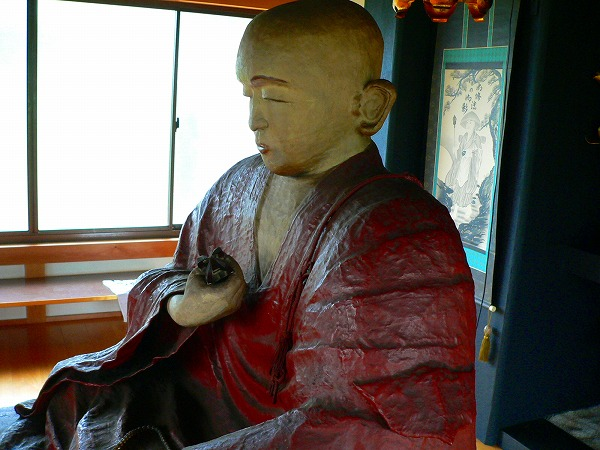
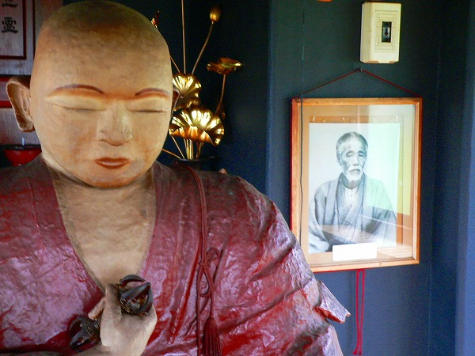
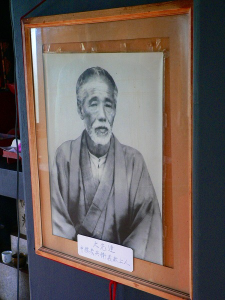
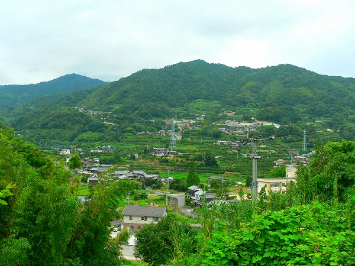

茂兵衛堂/山口県
周防大島のほぼ北端あたりに茂兵衛堂という小さなお堂がある。

外から見ると地味なお堂だが、茂兵衛堂という名前が気になって寄ってみた。
地蔵堂とか観音堂とかはよく聞くが、茂兵衛堂って…何？菩薩の一種なの？
様々な疑問を持ちつつ、扉を開けてみると…

おおおっ！
インパクト抜群な方がいらっしゃるじゃないすか。

形状からして弘法大師、なのだろう。
多分プロじゃない誰かが造った、と思われる。
御顔の部分もそれなりに個性的だが、衣の部分も中々。
恐らく骨組みに紙状のモノを貼り合わせている感じだと思う。
コレを仏像業界では脱活乾漆造、あるいはハリボテというそうです…。

大師サマの傍らに一枚の写真が額装されていた。

この人物こそが茂兵衛堂の主人公である中務（なかつか）茂兵衛氏。
このお方、何と四国八十八カ所霊場を歩いて巡礼した回数が最も多いというお遍路ロードスターなのだ。
幕末から大正にかけて巡礼したその数なんと280回！！！！！地球約10周分！！！！
一周しただけで一生ドヤ顔できるレベルの四国歩き遍路を280回るって…一体どういう精神構造してるんだろか？
というか、そもそも弘法大師サマもそういうエクストリーム的な巡礼とか想定してなかったと思うぞ！
維新前夜の慶應元（1866）年、周防大島を飛び出しひたすら四国遍路を巡礼し続け、大正11年に巡礼途上で死ぬまで生涯この地に留まり、故郷に帰ることはなかったという。
この茂兵衛さん、四国遍路の世界ではもちろんレジェンド級の生き神様な訳だが、後から遍路する巡礼者のために220基もの道しるべ（遍路石）を建てたという。
単に自分のためだけに巡礼しただけでなく、自分で巡礼しながら後輩のために遍路石を建てたり、色々やってくれた大先達なんだなあ、と改めて思った。
その後、茂兵衛氏の偉業を顕彰するため生まれ故郷にこのお堂が建てられたのだ。

若くして故郷を飛び出し、死ぬまで遍路をし続けたその壮絶な生き方について考えてしまう。
最早２８０回も巡って入れば全四国が俺ん家状態なんだろうか？
単に巨大な無限ループを周回しているだけではなく、螺旋階段のように周れば周るほど上へ上へ昇っていくものなのだろうなあ。
これだけ凄い人物なのだからもっと大々的に顕彰してもイイと思うのだが、その割には地味な扱いのような気がする。
本当は四国にあるべきお堂なのかも知れない。
2006.08.
珍寺大道場 HOME